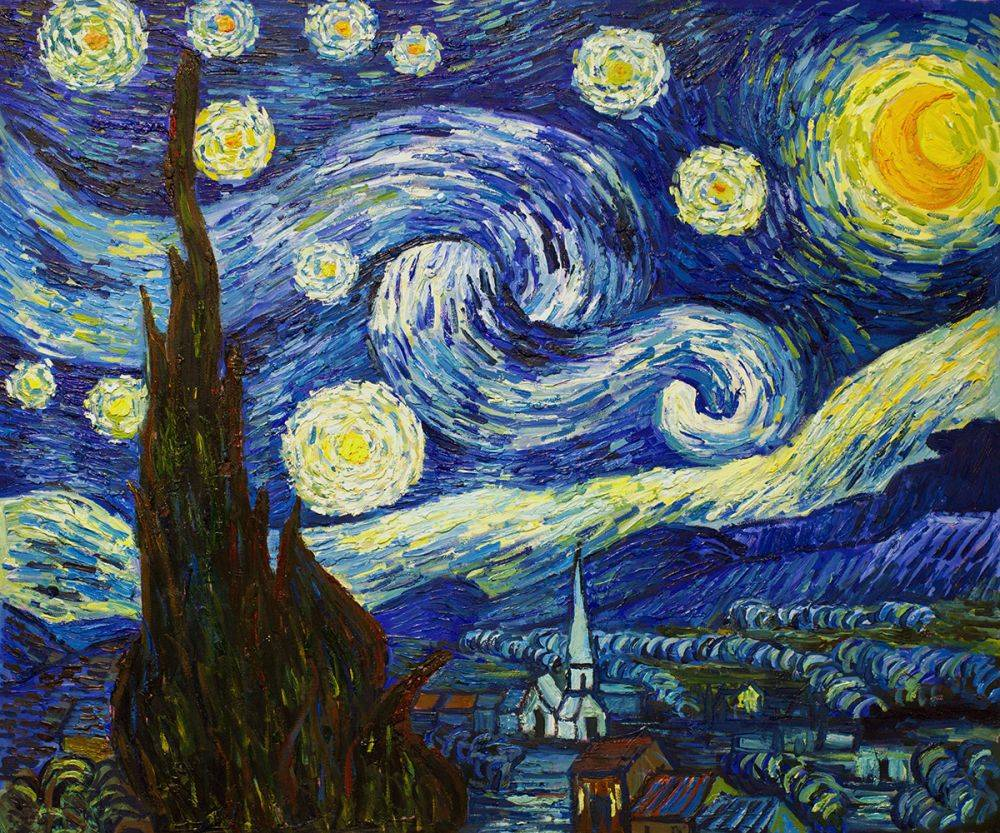

" Close friends are truly life's treasures. Sometimes they know us better than we know ourselves. With gentle honesty, they are there to guide and support us, to share our laughter and our tears. Their presence reminds us that we are never really alone."
Van Gogh's Painting
Vincent van Gogh completed more than 2,100 works, consisting of 860 oil paintings and more than 1,300 watercolors, drawings and sketches.
Several of his paintings now rank among the most expensive in the world; "Irises" sold for a record $53.9 million, and his "Portrait of Dr. Gachet" sold for $82.5 million. A few of van Gogh’s most well-known artworks include:
'Starry Night :'
Van Gogh painted "The Starry Night" in the asylum where he was staying in Saint-Rémy, France, in 1889, the year before his death. “This morning I saw the countryside from my window a long time before sunrise, with nothing but the morning star, which looked very big,” he wrote to his brother Theo.
'Sunflowers' :
Van Gogh painted two series of sunflowers in Arles, France: four between August and September 1888 and one in January 1889; the versions and replicas are debated among art historians.
'Irises' :
In 1889, after entering an asylum in Saint-Rémy, France, van Gogh began painting Irises, working from the plants and flowers he found in the asylum's garden. Critics believe the painting was influenced by Japanese woodblock prints.
'Self Portrait' :
Over the course of 10 years, van Gogh created more than 43 self-portraits as both paintings and drawings. "I am looking for a deeper likeness than that obtained by a photographer," he wrote to his sister.
- "I don't know anything with certainty, but seeing the stars makes me dream."
Some of The paintings of ' Vincent Van Gogh '
